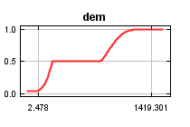
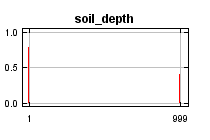
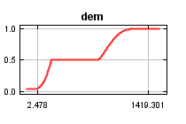
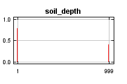

| Cumulative threshold | Cloglog threshold | Description | Fractional predicted area | Training omission rate |
|---|
| 1.000 | 0.027 | Fixed cumulative value 1 | 0.682 | 0.000 |
| 5.000 | 0.085 | Fixed cumulative value 5 | 0.479 | 0.000 |
| 10.000 | 0.140 | Fixed cumulative value 10 | 0.361 | 0.021 |
| 9.166 | 0.130 | Minimum training presence | 0.377 | 0.000 |
| 15.976 | 0.202 | 10 percentile training presence | 0.273 | 0.085 |
| 28.538 | 0.335 | Equal training sensitivity and specificity | 0.159 | 0.149 |
| 28.538 | 0.335 | Maximum training sensitivity plus specificity | 0.159 | 0.149 |
| 6.699 | 0.104 | Balance training omission, predicted area and threshold value | 0.432 | 0.000 |
| 15.886 | 0.201 | Equate entropy of thresholded and original distributions | 0.274 | 0.085 |


 


